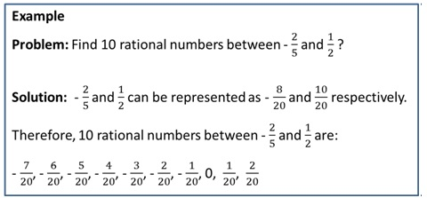

Rational numbers between two rational numbers
There are always definite amount of numbers between two natural/whole numbers or integers. But, there can be indefinite amount of numbers between two rational numbers.
Between any 2 numbers, it is not necessary that there will be an integer or a whole number but there is always a rational number.
Example, there are no integer or whole or natural numbers between 1 and 2, but there are rational numbers like, 1/2, 1/3 and 2/3, 1/4, 2/4, 3/4 etc.
